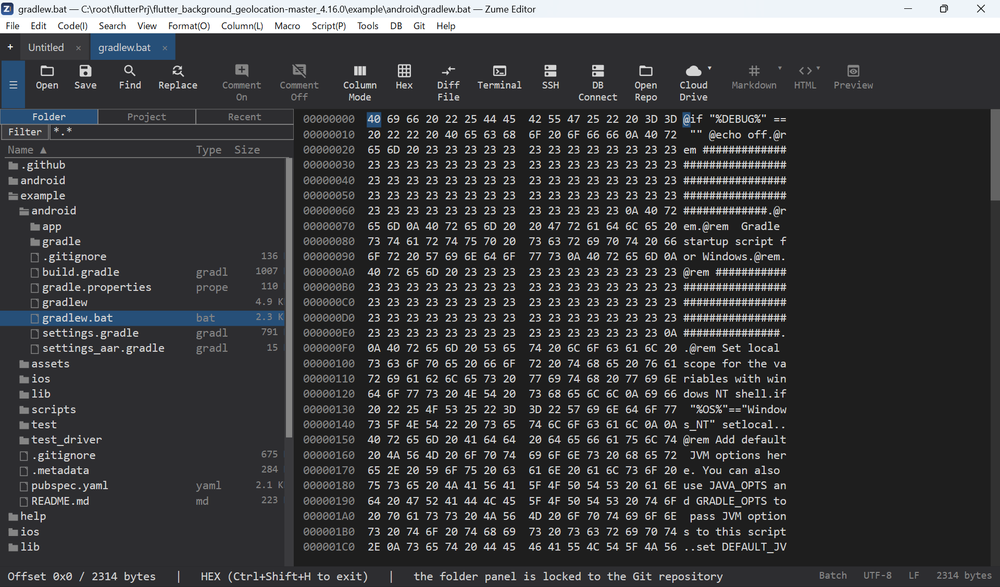

Hex / バイナリエディター¶
Ctrl+Shift+H（またはコマンドパレット）で、タブをHex表示に切り替えます。
- オフセット / 16進 / ASCII の列。カーソルは16進・ASCII両方で強調されます。
- バイトの 選択（Shift+移動またはドラッグ）、コピー（16進 / 生）、バイト列の
検索 / 置換（
48 65や4865、通常テキストでも可）。 - バイトの 挿入 / 上書き。編集はテキスト表示と1つの取り消し履歴を共有します。
- EBCDIC 列（任意）、1行あたりバイト数（8 / 16 / 32）の設定。
- 大容量ファイル でも動作し、 2ファイルをバイト単位で比較 できます。
